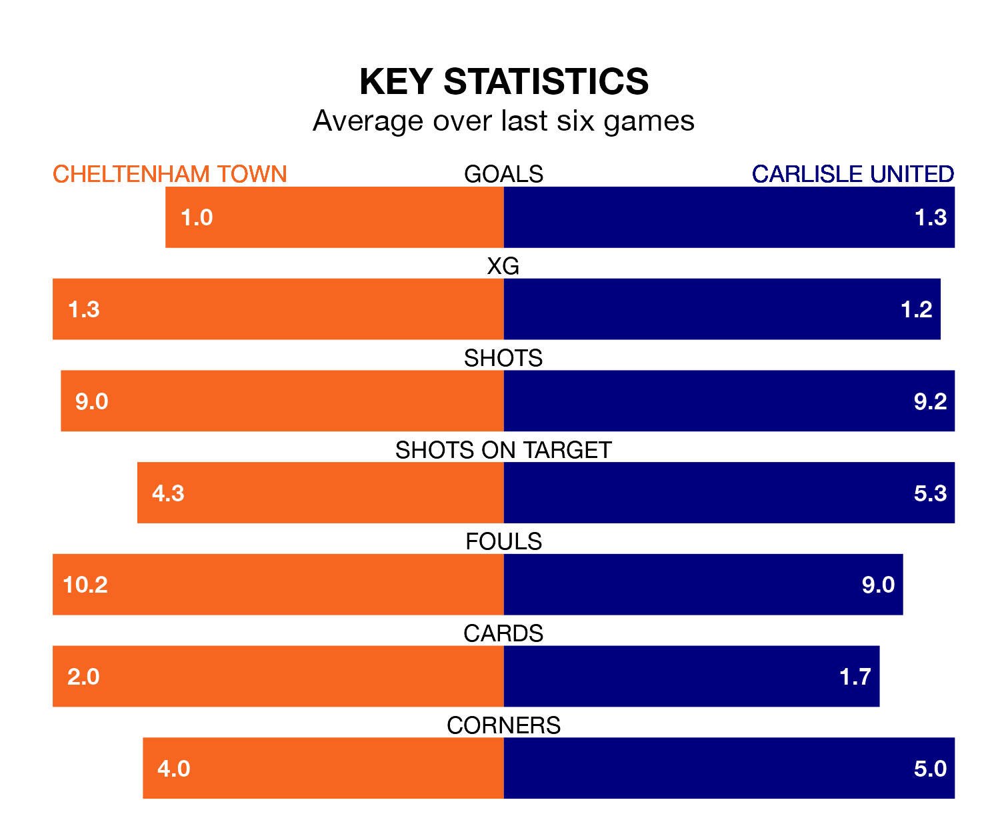

Tuesday's late match at the Completely-Suzuki Stadium sees two relegation candidates play each other, as 22nd-ranked Cheltenham Town host bottom of the table Carlisle United.
Cheltenham have picked up 38 points from their first 38 EFL League One games, with 10 wins and eight draws.
That is 11 points more than Carlisle have collected, having won six and drawn nine.
In the last 10 years, Cheltenham and Carlisle have played each other on 11 occasions. Cheltenham won five of them, Carlisle four, and they drew twice.
On average, the Robins scored 0.8 goals and Carlisle 0.9 in those matches.
Their last meeting was on December 23, when Cheltenham won 1-0 away.
Cheltenham are in bad form in EFL League One, with one win and a draw from their last six games.
And also with a win and a draw over that period, Carlisle's form is identical – they have both taken four points from 18.
With 34 goals in 40 games so far this season, Town are the league's third-lowest scorers with 0.8 goals per game. And they are conceding more than average, letting in 56 goals at a rate of 1.4 per game.
United are also below average scorers, with 0.9 goals per game, compared to a league average of 1.3. They have conceded 1.8 goals per game.
Cheltenham's last match was on Saturday, a 3-1 loss against Leyton Orient, with Joseph Andre Nuttall getting the goal for the Robins.
Carlisle lost 2-0 against Northampton Town last time out, also on Saturday.
Tuesday's match will be refereed by David Rock, who has taken charge of 14 EFL League One games so far this season, issuing five red cards and booking 56 players. He has awarded two penalties.
The last Cheltenham game Rock refereed was a 1-1 away draw with Wigan Athletic on February 23. He is yet to oversee a match featuring Carlisle this season.
Updated: 11:20 (UTC), 09/04/24